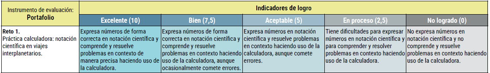

Objetivos específicos
1. Expresar números grandes y pequeños en notación científica, y viceversa, y operar con ellos.
2. Comprender y resolver problemas geométricos contextualizados haciendo uso de la notación científica.
1. Expresar números grandes y pequeños en notación científica, y viceversa, y operar con ellos.
2. Comprender y resolver problemas geométricos contextualizados haciendo uso de la notación científica.

Obra publicada con Licencia Creative Commons Reconocimiento No comercial Compartir igual 4.0